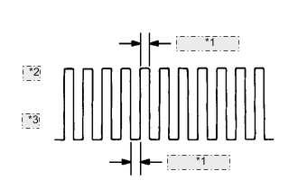

Tech Tips
Compared to normal mode, check mode is more sensitive to malfunctions. Therefore, check mode can detect malfunctions that cannot be detected in normal mode.
Note
All of the stored DTCs and freeze frame data are cleared if: 1) the ECM is changed from normal mode to check mode or vice versa; or 2) the power switch is turned from on (IG) to on (ACC) or off while in check mode. Before changing modes, always check for and note any DTCs and freeze frame data.
CHECK MODE PROCEDURE
Check and ensure the following conditions:
Auxiliary battery voltage is 11 V or higher.
Accelerator pedal fully released.
Park (P) is selected.
A/C switch is off.
Turn the power switch off.
Connect the GTS to the DLC3.
Turn the power switch on (IG).
Turn the GTS on.
Enter the following menus: Powertrain / Engine / Utility / Check Mode.
| Tester Display |
|---|
| Check Mode |
Change the ECM from normal mode to check mode.

| *1 | 0.13 seconds |
| *2 | ON |
| *3 | OFF |
Check that the MIL flashes as shown in the illustration.
Turn the power switch on (READY).
Check that the MIL turns off.
Simulate the conditions of the malfunction described by the customer.
Check for DTCs and freeze frame data using the GTS.